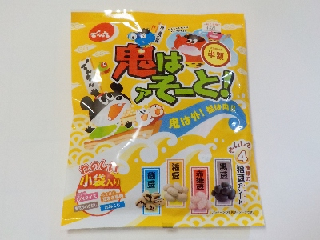
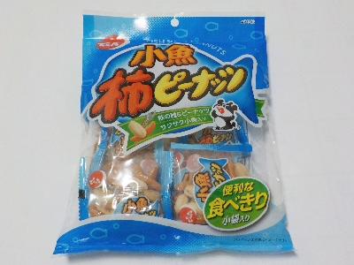
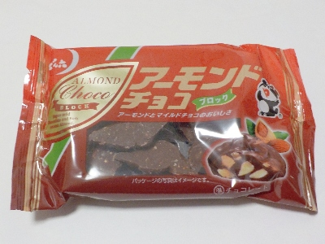
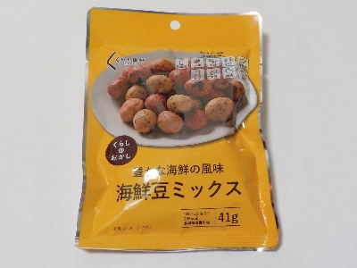
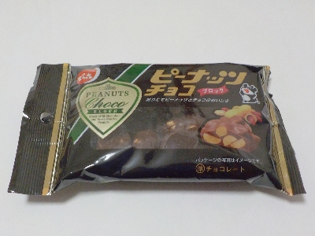
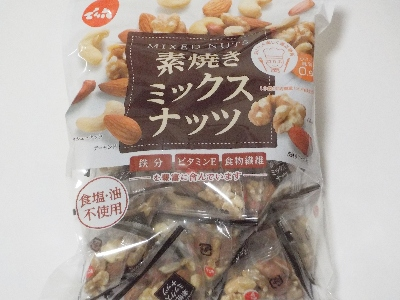
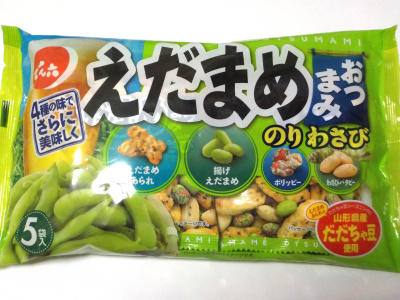

でん六の鬼はアそーとは味が選べていいですね。
更新日 : 2026/02/04

磯豆、福豆、赤糖豆、黒豆の4種類です。小袋入りなのでまいた後に拾いやすいです。
基本的に豆なので似たような味ですが、赤糖豆は砂糖でコーティングしてあり甘いです。磯豆は海苔が付いてほんのり磯風味でした。福豆と黒豆はシンプルな大豆味です。
アソートは選ぶ楽しみがあっていいですね。この大豆は小粒で食べやすかったです。
賞味期限は10月でずいぶん先ですが、2/4には半額の161円でした。90g
山形県山形市清住町3丁目2-45
更新日 : 2026/02/04

磯豆、福豆、赤糖豆、黒豆の4種類です。小袋入りなのでまいた後に拾いやすいです。
基本的に豆なので似たような味ですが、赤糖豆は砂糖でコーティングしてあり甘いです。磯豆は海苔が付いてほんのり磯風味でした。福豆と黒豆はシンプルな大豆味です。
アソートは選ぶ楽しみがあっていいですね。この大豆は小粒で食べやすかったです。
賞味期限は10月でずいぶん先ですが、2/4には半額の161円でした。90g
更新日 : 2025/12/14

私は柿の種があんまり好きじゃないですが、これは美味しく食べれます。
柿の種が多いと辛いだけだって感じてしまうんですが、小魚が甘いので味が単調にならないのがいいですね。
袋の裏にピーナッツの美味しい素材選びと栽培方法について書いてありました。低価格のピーナッツ中には質が悪く次は買わないって商品がありますが、このピーナッツは確かに品質がよく美味しかったです。
更新日 : 2025/01/02

チョコの中にクラッシュアーモンドが入ってます。
森永製菓の小枝をチョコ多めにした感じかなと思いました。美味しいですね。
更新日 : 2024/12/30

ピーナッツの衣部分が多いので、とってもサクサクしてました。
海鮮ミックスなので、磯っぽい感じがしました。海苔っぽい感じが一番したかな。
更新日 : 2024/11/24

袋は大きいんですが、中に入っているのは6個だけでした。
ピーナッツチョコはいろんな商品が販売していま。チョコの分量、甘さ、ピーナッツの量で考えると、私はこれが好きです。
チョコ味や甘さがマイルドな感じの商品は、物足りなくて沢山食べてしまいます。この商品は味が濃いので満足感が高いです。
更新日 : 2024/06/13

小袋にアーモンド、くるみ、落花生、カシューナッツが入っています。普通に美味しくて、普通に体にいい感じの商品。
毎日いっぱい食べたいけど、ちょっと高価なので無理です。
月に1回くらいは買って食べたいかな。もっと食べれるくらいの収入が欲しいかな。
更新日 : 2023/08/22

えだまめあられ、揚げえだまめ、ポリッピー、わさびバタピーの4種類が入っています。
わさびバタピーや枝豆系のお菓子は爽やかでした。いいおつまみでした。
でん六なので豆ものは美味しいですね。